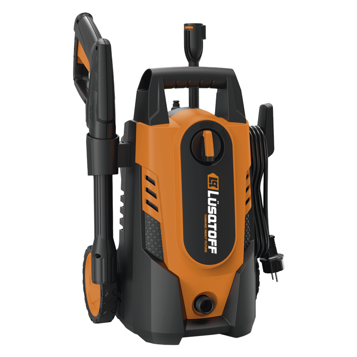
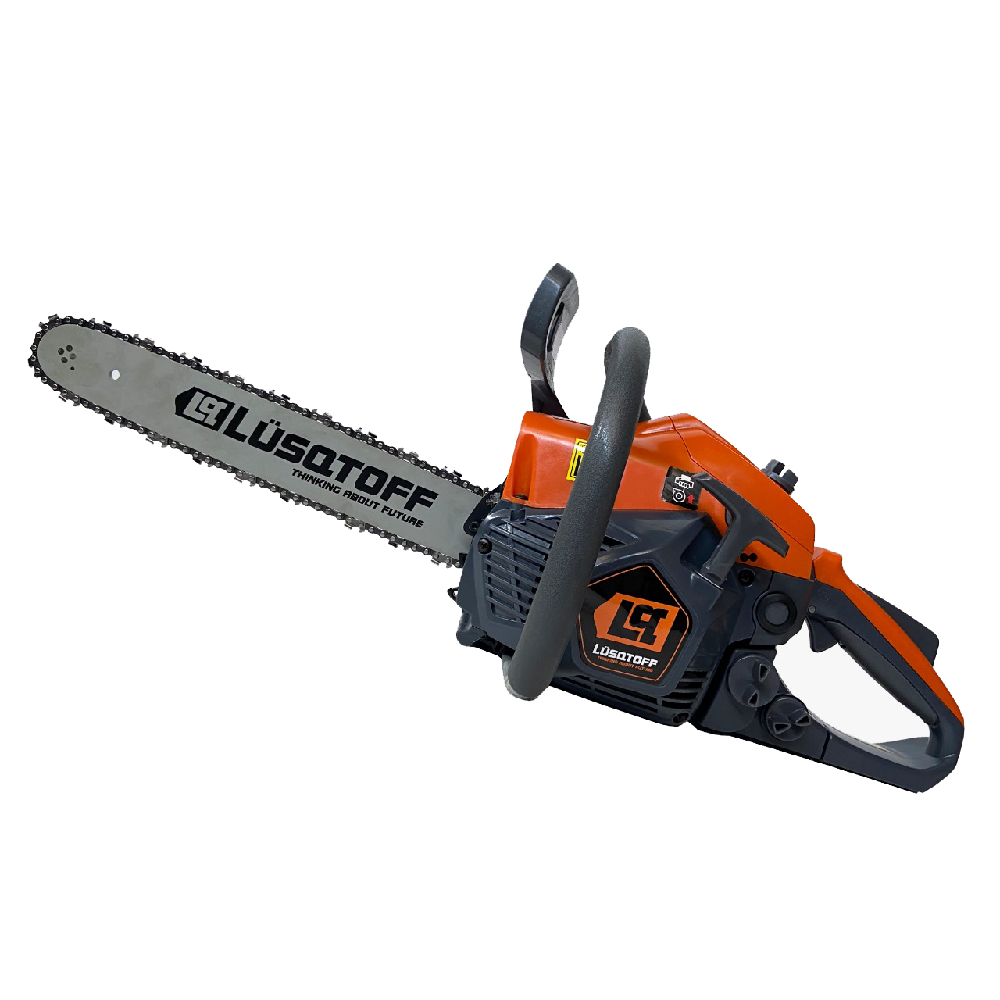

HIDROLAVADORA LUSQTOFF
HL-150
- Tensión: 220 - 50 Hz
- Potencia: 1200W
- Presión: 70 bar
- Caudal: 6.8 lts/min
- Largo manguera: 3 metros
- Peso: 5.2kg

MOTOSIERRA LUSQTOFF
GS-3800
- Tensión: 220 - 50 Hz
- Potencia: 1200W
- Presión: 70 bar
- Caudal: 6.8 lts/min
- Largo manguera: 3 metros
- Peso: 5.2kg
